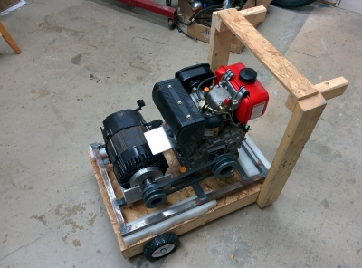
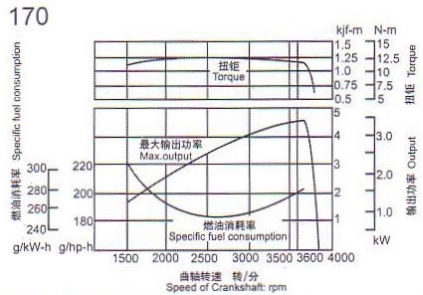

|  | Behold the current
state of supreme beauty. It's running but is one of the loudest things
I've ever made. |
| The
pulley ratio has the alternator turning at 3600RPM
with the engine at 3000RPM. The does lower the maximium power available
but the life of the engine will be exteded which is great because... |  |
| ...it's
not a real Yanmar diesel. So not made in Japan with meticulous
craftsmanship and not of the highest grade materials though the
castings have no visible defects. This speaks well of the manufacturer
in China, Launtop, as there is a large number of companies making these
knock-offs and some are atrocious. |
| |
| |
| |